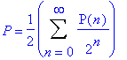
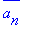
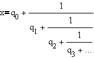
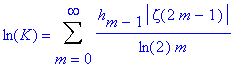
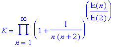
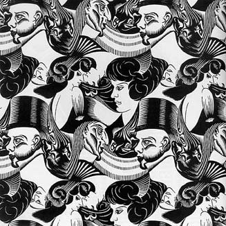

.
.
| Main Page | History Topics Index |
Difference equations and recursive relations have been studied extensively by Fatou and Julia in the case of rational functions in complex domain. Gaston Julia(1893-1978) and Pierre Fatou (1878-1929) made a fundamental contribution to the study of iterative processes. Their contribution, although regarded as a masterpiece, was largely ignored by the mathematical community until a revival in the late 1970s spawned by the discovery of fractals by Benoit Mandelbrot.
Given a function f(x) and a starting value x0one can construct a new value x1=f(x0). With some persistence, the next value x2 is obtained by another application of f: x2=f(x1))=f(f(x0)). This is an iterative process that, generally speaking, generates a sequence x0, x1, ... xk, ..., where xk is the kth iterate obtained by applying the function f to x0 k times. The sequence is known as an orbit of its starting point x0.
For
a given function f, behavior of an orbit very much depends on the selection
of the starting point x0. Following is a rough classification
of possible behaviors:
| 1. Convergence: the sequence of points {xk} converges to a limit |
| 2. Periodic cycle: for some p>0 x0=xp so that the sequence repeats itself |
| 3. Chaos: none of the above. The points {xk} go from one place to another in apparently chaotic manner |
The set of points with chaotic orbits is called
the Julia set for
a given function f.
Fractal Curves and Dimension
Fractal Curves and Dimension have been studied extensively by Sierpinski and Besicovitch. Fractals burst into the open in early 1970s. Their breathtaking beauty captivated many a layman and a professional alike. Striking fractal images can often be obtained with very elementary means. However, the definition of fractals is far from being trivial and depends on a formal definition of dimension.
It takes a few chapters of an Advanced Analysis book to rigorously define a notion of dimension. The important thing is that the notion is not unique and even more importantly, for a given set, various definitions may lead to different numerical results. When the results differ the set is called fractal.
The topological dimension of a smooth curve is, as one would expect, one and that of a sphere is two, which may seem very intuitive. However, the formal definition was only given in 1913 by the Dutch mathematician L. Brouwer (1881-1966). A (solid) cube has the topological dimension of three because in any decomposition of the cube into smaller bricks there always are points that belong to at least four (3+1) bricks.
The Brouwer dimension is obviously an integer. The Hausdorff-Besicovitch dimension, on the other hand, may be a fraction. Formal definition of this quantity requires a good deal of the Measure Theory. But fortunately for a class of sets Hausdorff-Besicovitch dimension can be easily evaluated. These sets are known as the self-similar fractals and, because of that ease, the property of self-similarity is often considered to be germane to fractals in general.
Koch's
Snowflake illustrates the idea of self-similarity. Initially there
is an equilateral triangle in the middle of a straight line segment. This
combination of four segments form a pattern which serves as a description
of an algorithm to be used later on. The secret meaning of the pattern
is this:
Start with a straight line
segment. Proceed
in stages. On every stage traverse the curve
obtained previously. Every time you
encounter a straight line segment, replace it
with
the four-segment pattern as was first
done with the original line segment.
It's possible to formally prove that thus obtained curves converge to a
limit curve. This limiting curve is self-similar because it consists of
four smaller copies of itself which, in turn, also and naturally consist
of four smaller copies of themselves and so on.
Thue-Morse Constant and Sequences
Morse
is the father of Symbolic Dynamics. The Thue-Morse
constant is also called the
Parity Constant and is defined by

and is equal to 0.41245403364... Click here
for some application of Thue-Morse
sequences to the fractal music. Here P(n) is
the parity of n. The Thue-Morse constant can be written in base 2
by stages by taking the previous iteration
an
,
taking the complement 
a0= 0.02
a1= 0.012
a2= 0.01102
a3= 0.011010012
a4= 0.01101001100101102
This can be written symbolically as
an+1= an + * 2-2n
with a0=
0. Here the complement is the number such
that an+=
0.11....2, which can be found from
.
 .
.and
an+1= an+ (1 - 2-2n - an)2-2n.
The regular continued fraction for the Thue-Morse
constant is [0 2 2 2 1 4 3 5 2 1 4 2 1 5 44 1 4 1 2 4 1 1 1 5 14 1 50 15
5 1 1 1 4 2 1 4 1 43 1 4 1 2 1 3 16 1 2 1 2 1 50 1 2 424 1 2 5 2 1 1 1
5 5 2 22 5 1 1 1 1274 3 5 2 1 1 1 4 1 1 15 154 7 2 1 2 2 1 2 1 1 50 1 4
1 2 867374 1 1 1 5 5 1 1 6 1 2 7 2 1650 23 1 1 1 2 5 3 84 1 1 1 1284...],
and seems to continue with sporadic large terms in suspiscious-looking
patterns.
Banach Contraction Principle
In the theory of metric spaces
an important part is played by cantraction mappings. A mapping T
of a metric space (M,z) into itself is called
a contraction mapping if
d(Tx, Ty) k d(x, y), 0< k < 1.
for all elements x,y of M.
It can be proved that such a mapping always has a unique fixed point, i.e. that there exists a unique x which is an element of M such that
Tx = x.
This Important result is called Banach's fixed point theorem. The proof of this theorem not only establishes the existence and uniqueness of the fixed point; it also prescribes a method of finding it. If we begin with an arbitrary element x0 of M and generate a sequence {xn} by means of the iteration formula
xn+1= Txn (n = 0,1,2,...)
the limit of this sequence is the fixed point of the contraction mapping T.
The error involved in truncating the iterative process at the nth stage is estimated by the formula
d(xn, x) kn/(1-k) * d(x1, x0)
The Banach
fixed-point theorem, and its generalization the Shauder fixed-point theorem
are used extensively in proving existence theorems for problems in algebra,
and the theory of differential and integral equations, and in establishing
the convergence of iterative schemes in the numerical analysis of such
problems.
Khinchin
worked extensively withcontinued
fractions. Let

be the simple continued fraction of a real number x, where the numbers qi are partial quotients. Khinchin considered the limit of the geometric mean
Gn (x) = (q1q2 ....qn )1/n
as n approaches infinity. Amazingly enough,
this limit is a constant independent of x--except if x belongs to a set
of measure 0--given by
K = 2.685452001...
Explicit expressions for K include



For more detailed explanation of this constant click here.
Aleksandr
Gelfond
wrote an important textbook on Difference Equations and Finite Differences
in which he used continued fractions extensively.
Recursive Design
Maurits Escher
was a painter who created paintings using recursive designs.
The following picture is Escher's Eight
Heads.

This picture is titled Reflection in a Glass Ball.

This picture is titled Up and Down.

Visit Algorithm